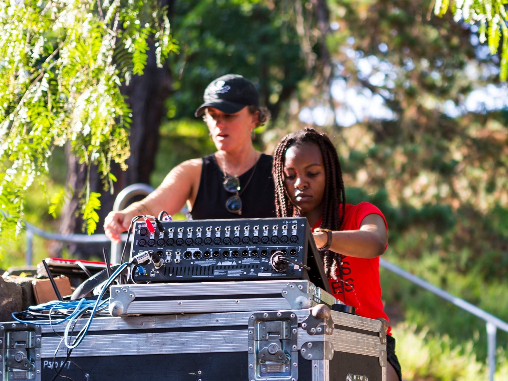

Sound → Live
Afrohub at Fairfield

Afrohub is an arts organisation and creative community space in Melbourne founded by Saba Alemayoh that showcases African Australian creatives, art, food, and culture
They frequently collaborate with local councils, notably curated events for the Fairfield in Feb summer concert series at the Fairfield Amphitheatre along the Yarra River.
- RoleLive Engineer
- Year2020
- ArtistsJazmaris, Alaariya, DJ Mai, Baasto, Elle Shimanda, Pookie